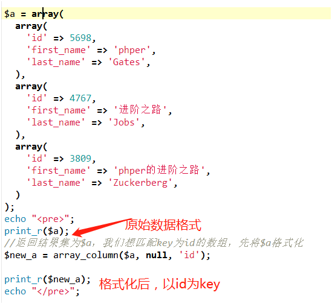
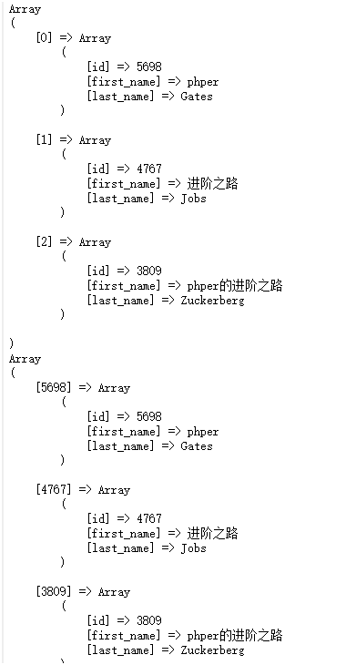
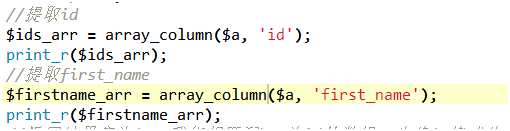
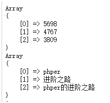
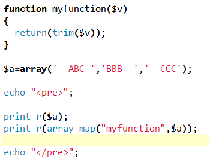
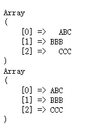

原文连接:https://www.cnblogs.com/yaozhengqi/p/10549780.html
作为一个有多年PHP开发经验的码农，我也是前段时间才发现PHP处理数组有这么好用的函数，
至此之前，我处理数组的数据基本都是使用循环，记录一下两个函数的用法：
array_column() 函数
返回输入数组中某个单一列的值。
语法：
array_column(array,column_key,index_key);
参数
array
必需。规定要使用的多维数组（记录集）。
column_key
必需。需要返回值的列。
可以是索引数组的列的整数索引，或者是关联数组的列的字符串键值。
该参数也可以是 NULL，此时将返回整个数组（配合 index_key 参数来重置数组键的时候，非常有用）。
index_key
可选。用作返回数组的索引/键的列。
使用场景：
1、平时我们通过查询数据库得到的数组结果集，需要将数组格式化为主键id为key的时候，不用通过循环重组数组，直接调用该函数可以返回了，示例：
*注意：作为key要使用唯一值，不然会出现数据覆盖

看看输出结果：

2、提取结果集中某一列的数据值

看看输出结果：

总结：
使用array_column这个函数，可以很方便地提取数组的数据，不用去写循环语句遍历提取。注意的是数组为：要使用多维数组。
array_map() 函数
将用户自定义函数作用到数组中的每个值上，并返回用户自定义函数作用后的带有新值的数组。
回调函数接受的参数数目应该和传递给 array_map() 函数的数组数目一致。
语法：
array_map(myfunction,array1,array2,array3...)
（提示：您可以向函数输入一个或者多个数组。）
使用场景：
当需要处理数组中每个值时，比如需要将数组的值去掉空格，或者所有大写字母改成小写
示例：

看看输出结果：

总结：
array_map使用起来很方便，可以调用回调函数处理数组的值。
------------------------------------------------------------------------------